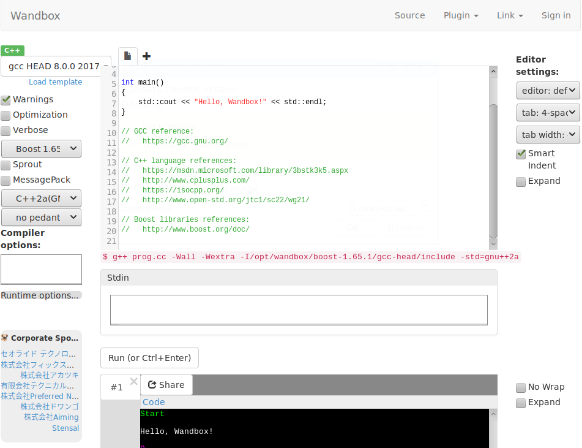

Сайт Wandbox.com позволяет запускать код на языке C++ прямо в браузере. Регистрация не требуется.
На выбор предоставляется несколько компиляторов, можно выбирать различные опции компилирования - предупреждения, оптимизация, формат вывода, плюс можно добавить свои опции. Имеется консоль вывода результатов, можно задать входной поток, который будет скормлен коду при запуске.
Выглядит сайт так:
